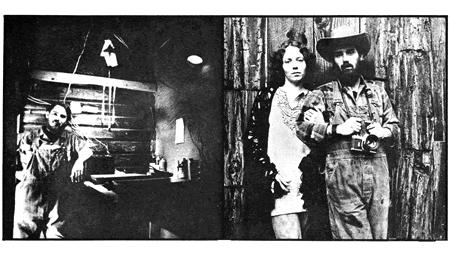
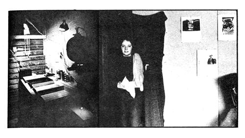

For me, photography is both a profession and a way of life. So, when I left Chicago and came west to an isolated homestead in southern Oregon two years ago, I (naturally) wanted to continue developing and printing my own pictures.
The New Hope Mining Claim on which I now live came complete with cabin, unpolluted stream running past the front door, and a spectacular view of the Siskiyou Mountains.
What it did not have was electricity (the nearest powerline was two miles away) which was fine with me, but posed some serious problems for my darkroom. Nor did my new homestead have an oversupply of the materials from which photo labs are usually built these days (Formica and stainless steel are just not native to the woodlands of southern Oregon).
"Well, what the heck," I thought. "Nothing ventured, nothing gained." And, after some weeks of frustrating experiments, I did manage to come up with a practical way to have my cake (the darkroom) and eat it too (without really bringing "progress" into my part of the mountains).
I started by constructing a photo lab as an addition to the 55-year old cabin which came with my claim. Some might call the darkroom "rustic"; Its beams are a few scrounged 2 X 4's and poles cut from small trees in the neighboring forest. This framework was then covered with whatever boards came to hand and made light-tight with ordinary 6-mil black polyethylene. A thick Army blanket backed with another sheet of poly serves as an absolutely "black" drapery type door. It's dark inside that room!
So far, so good. But that brought me to a bigger problem: Now that I had it as black as a demon's heart inside that photo lab, how was I without electricity going to introduce the light I'd need to develop and print pictures?
I tackled the easiest part of that mystery first by fitting a deep red shade over a small kerosene lamp to make a darkroom safelight. Some trial and error soon taught me that it wouldn't fog the paper I used if I kept the light at the far end of the room.
My enlarger presented a deeper dilemma: There was just no way I could put it into operation without using electricity of some sort. But who said I had to run two miles of utility lines in to my cabin just to power an enlarger? Nobody. Not if I could rig up a way to convert the enlarger to a 25-watt "camper" bulb connected to the 12-volt battery from "George", our car.
As it turned out, making the actual conversion (installing the new bulb and hooking it to George's extracted battery) was the easy part. The hard part was "fine tuning" the substituted light source. Regular enlarger bulbs, you see, are specially designed to "diffuse" their illumination far more than my battery-powered substitute. My backwoods rig worked, in other words but it also produced an indelible, dark "hot spot" right in the center of all my prints.
I initially tried to offset this by lowering the new bulb in the enlarger's housing, installing an extra condenser, and lining the housing with aluminum foil to further reflect (and thereby diffuse) the light.
When that wasn't enough, I inserted a homemade bellows between the 25 watt bulb and the condensers so that by moving the light source around as a print is being made I can manually diffuse the enlarger's output of light. The idea works beautifully and, as far as I'm concerned, all smaller enlargers should have this feature to eliminate hot spots.
George's transplanted battery, of course, usually runs down after powering my jerry-built enlarger for two or three days. But that's no big problem. I just put it back in the car and take a drive up the mountain to admire a Siskiyou sunset which is generally all it takes to put a charge back into the storage cells.
The chemicals I need for my darkroom work are brought up to proper temperatures on a wood-burning cook stove (which always gives me a good excuse to throw some bread or a couple of pies in the oven "as long as we're firing up the stove anyway"). This sounds a lot more crude than it really is: I've found this simple method of warming darkroom solutions can be regulated well enough to maintain the close temperature ranges required for making color prints (it's almost as easy, in fact, to process color transparencies on my backwoods chemical warmer as it is to run off a batch of black and white film).
My print dryer is a line, some clothespins, and a few blotters and I mount and seal color slides myself (it saves a lot of money) with an old-fashioned "sad" iron that we heat on our trusty wood burning stove.
In short, if my experiments up here in the mountains have taught me anything, they've shown me just how rewarding photography can be without depending on highly developed technology. Now that I've freed myself from excessive and expensive equipment, I've found that taking pictures is a great deal more fun than it used to be.
I've also learned something about maintaining a better working relationship with nature than I'd ever have suspected possible if I had remained in town. Photo chemicals are routinely flushed down the drains of big-city darkrooms, for instance, to wind up who knows where? Out here, though, I know that I'm responsible for maintaining the purity of my drinking water so I carefully return all my photographic solutions to their original bottles and dispose of them at the approved county dump.
By the same token, I've become less leery of dirt the technician's bane and I've found ways to cope with whatever drifts into my darkroom. After all, living in the country means living with good, ole dirt and liking it!
Living in the "tall and uncut" also means making a certain adjustment in what you expect to earn from photography. For example, I exchanged the first family portrait I shot out here for a rabbit, SO pounds of potatoes, some canned beans, and a home cooked meal. I also have an ongoing agreement with a neighboring commune (I take pictures for it in exchange for firewood). The most cash money I've seen since I've been here has come from doing freelance assignments for the federal government's Job Corps and teaching photography courses for a local community college.
Yes, by city standards, my income has plunged since I left Chicago for the woods of southern Oregon. But, by my own standards, life is now a lot more pleasant and profitable. And that's what it's all about.
|
 |
 |
|